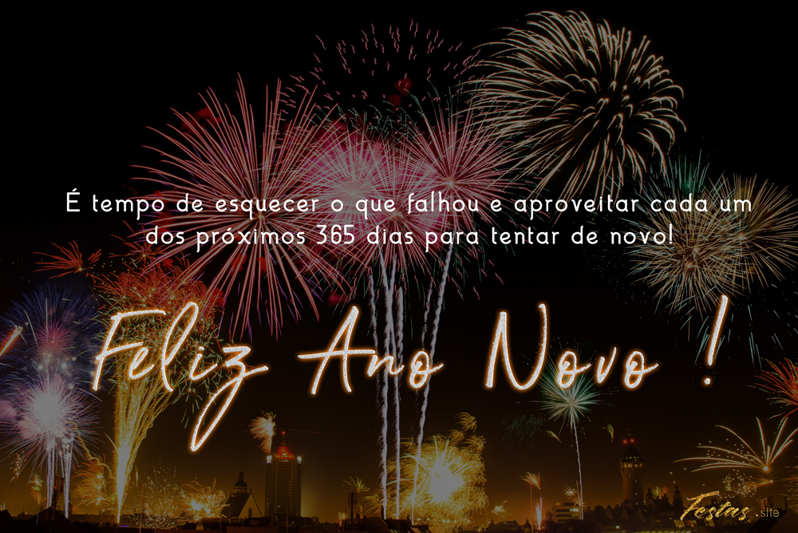
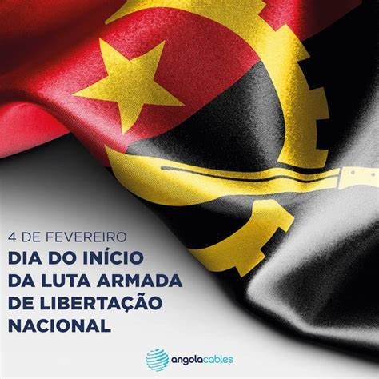

Feriados em Angola
-
1 de Janeiro - Dia mundial da Paz
Este feriado comemora como o início de um novo ciclo no calendário.
 -
4 de Fevereiro - Dia da luta contra a colonização e a opressão:
Marca o inicio da luta armada pela independenciade Angola em 1961.
-

Dia do inicio da luta armada
-
8 de Março - Dia internaciol da Mulher
Comemora a luta das mulheres por direitos iguais pela igualdade de genero e pelo empoderamento femenino.
-
Dia internacional da Mulher.
-
1 de Maio - Dia do trabalhador:
É comemorada mundialmente para reconhecer as contribuições dos trabalhadores para o densevolvimento das sociedades.
-
Dia do Trabalhador
.png)
-
4 de Abril -Dia da paz e reconciliação Nacional
Comemora o acordo de paz assinado em 2002, que apos da guerra civil Angolana.
-
Dia da Paz
-
17 de setembro - Dia dos Heróis Nacionais
Homenagea os heróis que lutaram pela independencia de Angola e oela defesa da soberania do país.
-
Dia do Herói Nacional
-
11 de Novembro - Dia da independencia:
Comemora a independencia do país que ocorreu em 1975.
-
Dia da independencia
-
25 de Dezembro - Natal
Feriado religioso para celebrar o nascimento de jesus Cristo, um dos principais eventos no calendário cristão.
-
Natal